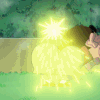

빛의 속도로 이동한 키자루
댓글
이해한 표정만큼은 만점 ㅋㅋ
60년 동안 공부 많이했네 루피
빛의속도는 아니고, 0.9999999999999999965C네.
루피 이 새끼 자기계발서 읽는다니까
브레인 기어... 파이브 !
루피 개똑똑해졌네 ㅋㅋㅋㅋ
이게 왜있는교 ㄹㅇㅋㅋ
ㅅㅂㅋㅋㅋㅋ
뭔데 ㅋㅋㅋㅋㅋ
아니시발ㅋㅋㅋㅋㅋ
만화라서 5초라고 표현 된거지 진짜 빛의 속도로 저ㅜ거리를 이동했으면 0.0000 몇초만에 이동 끝나고 시간 차이도 거의 안나겠지
무한한에너지로지구뿌셔ㅠㅠㅠㅠ
이거 치식백과 아니냐? ㅋㅋㅋㅋㅋ
맞음 ㅋㅋ
ㅋㅋㅋ 역시 마지막 틀니
빛의속도로 찰때 핵폭발 그이상이 일어나는거 생각했는데
근데 키자루 입장에선 60년이 흐르는게 맞는데 루피입장에선 팔지경이 60년뒤에 도달하는게 아니잖아
빛의 속도랑 근접하는 속도로
5초간 이동한 거리에 길이수축까지 고려하면
몇십광년 거리라 60년뒤 도착이 맞을 듯...?
키자루도 순식간, 루피도 순식간일 것 같은데 그냥 영상 만든 사람이 알못인듯 합니다..
아냐. 거꾸로 이해하고 있네.. 일단 동영상이 설명하는 5초/60년이란 구체적인 시간은 무슨 근거로 나온지 모르겠는데. 키자루가 영상에 나온 광속에 가까운 속도인 0.9999...965c로 5초 이동했다면 루피는 60년 흐르는거 맞긴 해
이해하기 쉽게 숫자를 맞춰보면 키자루가 루피랑 1광년 떨어진 거리에서 영상의 속도(0.999...965c)로 루피에게 접근한다고 생각해보자. 가속과 감속에 필요한 시간은 정확히 0이라고 치고. 그럼 키자루 입장에선 1광년 밖에 있는 루피에게 약 83밀리초 만에 도달하지만 루피 입장에선 키자루가 1년하고도 약 0.1나노초만에 도착한거야.

특수 상대성은 우리 생각보다 훨씬 존나게 상대적이라 루피 입장에선 60년 맞는데 키자루입장에선 더게맞아
키자루 본인이 시간을 느낄정도로 빛으로 변해있으면 저꼴나긴함
나루호도
바깥시간 기준으로 5초 이동했으면 5초 지난거지
뭔 알못이야
본인시간이 눈 깜짝할 시간이지 외부에선 5초 흘렀구나 아님?
키자루가 빛이면
수억광년이도 순식간에 도착하긴함
질량이도 무한대라 세상 멸망시키기가능
몸무게를 가지고 이동한다고 보면 이미 대기와 충돌로 행성파괴
아님? ㅋㅋ
빛은 질량이 없음
키자루는 빛의 속도가 아니라 빛이 되는거야?
원피스 안 봐서 몰랐음
(완벽하게 이해함) 루피 이 새끼 바보인 척 하는 거 맞네.